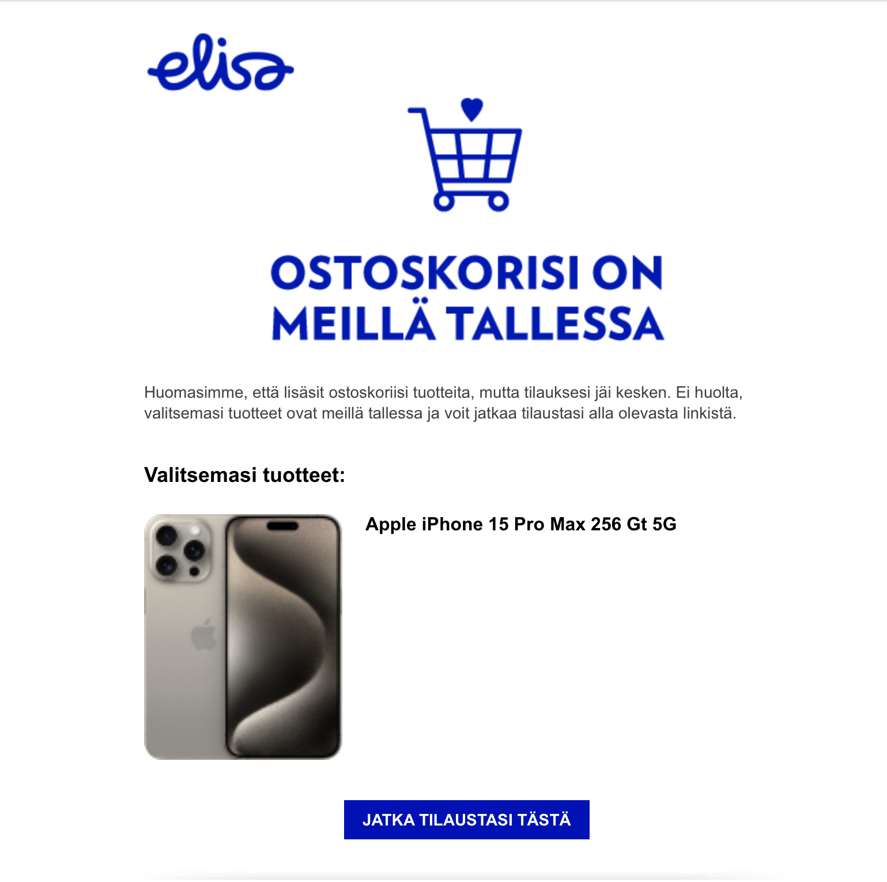
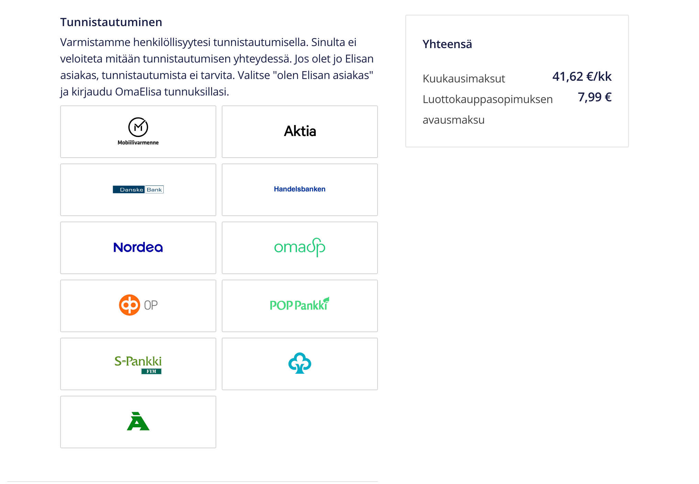

Gone Phishing
This is just a hypothetical scenario designed to illustrate a phishing attack targeting elisa.fi. Elisa is a telecommunications, ICT and online service company operating mainly in Finland and Estonia, but it also offers digital services for international operators and other companies. In Finland Elisa is the market leader in mobile and fixed network subscriptions
Target Audience:
Elisa customers who have pre-ordered the iPhone 15
Goal:
Steal mobile banking credentials
Attack Process:
- Register a domain name that is visually similar to the Elisa domain name, elisa.fi. This can be done by using characters from different scripts or character sets that resemble Latin characters. For example, the use the Cyrillic letter "а" instead of the Latin letter "a" or the Greek letter "ς" instead of the Latin letter "s".
- Send an email to all Elisa customers especially those who have pre-ordered the iPhone 15. The email copies the same email where an order is being placed and still on hold indicating that the pre-order hasn't been paid yet. Then a link where to click is also there. The link then will go to the wrong website that looks like the domain is elisa.fi.
The order page looks like the below screenshot:
The mobile banking verification page looks like the below screenshot:
Why It Would Work:
- The target audience is highly motivated. They have already pre-ordered the iPhone 15 and are eager to receive it. This makes them more likely to click on the link in the email, even if it is suspicious.
- The phishing email is well-crafted. It is designed to look like a legitimate email from Elisa. The site has been copied in the same way as the real email where an order is being placed and still on hold. This makes the email more believable and increases the chances that the user will click on the link.
- The fake Elisa website is very convincing. It looks very similar to the real Elisa website. This makes it difficult for users to tell the difference between the two websites.
Conclusion:
This phishing attack is well-designed and is likely to be successful. It is important for users to be aware of this type of attack and to take steps to protect themselves. Users should never click on links in emails, even if the email appears to come from a legitimate source. Instead, users should go directly to the website of the company they are interested in.
Additional Notes:
- The attacker could also use a sense of urgency in the phishing email. For example, the attacker could say that the user's order will not be processed if they do not verify their payment information immediately. This would create a sense of panic in the user and make them more likely to click on the link in the email without thinking.
- The attacker could also use this phishing attack to target other types of users, such as people who are waiting for a tax refund or people who have recently applied for a loan. The attacker would simply need to tailor the phishing email to the specific target audience.
Recommendations:
Elisa can take a number of steps to protect their customers from this type of phishing attack:
- Educate customers about phishing attacks and how to identify them.
- Implement email filtering to block phishing emails from reaching customers' inboxes.
- Use two-factor authentication for customer accounts.
- Monitor for fake Elisa websites and take steps to shut them down.
Customers can also take a number of steps to protect themselves from phishing attacks:
- Never click on links in emails, even if the email appears to come from a legitimate source.
- Go directly to the website of the company you are interested in by typing the URL into your web browser.
- Be suspicious of emails that create a sense of urgency.
- Use strong passwords and enable two-factor authentication for all of your online accounts.